🦎100 Days of Code The Complete Python Pro Bootcamp for 2023 🦎 Notes from Udemy_Angela
Day 1 - Project Assignments
The Project Details:
ASSIGNMENT 1
After you have written your code, you should run your program
and it should print the following:
Day 1 - Python Print Function
The function is declared like this:
print('what to print')
print('Day 1 - Python Print Function','The function is declared like this:',"print('what to print')",sep='\n')
print("\n\n\n")
ASSIGNMENT 2 - String Manipulation
String Concatenation is done with the "+" sign.
e.g. print("Hello " + "world")
New lines can be created with a backslash and n.
Fix the code below 👇
print("Day 1 - String Manipulation")
print('String Concatenation is done with the "+" sign.')
print('e.g. print("Hello " + "world")')
print("New lines can be created with a backslash and n.")
ASSIGNMENT 3
#Write a program that prints the number of characters in a user's name.
# You might need to Google for a function that calculates the length of a string.
#Warning. Your program should work for different inputs. e.g. any name that you input.
#Example Input
#Angela
l=input('what is your name?')
print(len(l))
print( len( input("What is your name? ") ) )
ASSIGNMENT 4
# Write a program that switches the values stored in the variables a and b.
# Example Input
# a: 3
# b: 5
# Example Output
# a: 5
# b: 3
# 🚨 Don't change the code below 👇
a = input("a: ")
b = input("b: ")
# 🚨 Don't change the code above 👆
####################################
#Write your code below this line 👇
####################################
#Write your code below this line 👇
c=a
d=b
a=d
b=c
#Write your code above this line 👆
####################################
# 🚨 Don't change the code below 👇
print("a: " + a)
print("b: " + b)
Day 2 - Project Assignments
The Project Details
ASSIGNMENT 5
# Write a program that adds the digits in a 2 digit number.
# e.g. if the input was 35, then the output should be 3 + 5 = 8
# Example Input
# 39
# Example Output
# 3 + 9 = 12
# 12
# 🚨 Don't change the code below 👇
two_digit_number = input("Type a two digit number: ")
# 🚨 Don't change the code above 👆
####################################
#Write your code below this line 👇
# x=int(two_digit_number)//10
# y=int(two_digit_number)%10
# s=x+y
# print("The summation of the two digits of the number is:\n ",s)
####################################
first_digit = two_digit_number[0]
second_digit = two_digit_number[1]
print(second_digit+first_digit)
print = (int(second_digit)+int(first_digit))
####################################
ASSIGNMENT 6
# Write a program that calculates the Body Mass Index (BMI) from a user's weight and height.
# The BMI is a measure of some's weight taking into account their height.
# e.g. If a tall person and a short person both weigh the same amount, the short person is usually more overweight.
# The BMI is calculated by dividing a person's weight (in kg) by the square of their height (in m):
#######################
# Example Input
# weight = 80
# height = 1.75
# Example Output
# 80 ÷ (1.75 x 1.75) = 26.122448979591837
# 26
########################
# f=15.22
# print(int(f))
# # 🚨 Don't change the code below 👇
height = input("enter your height in m: ")
weight = input("enter your weight in kg: ")
# # 🚨 Don't change the code above 👆
#Write your code below this line 👇
b=float(height)
a=float(weight)
bmi=a/(b*b)
print(int(bmi))
# sol in that video
bmi = int(weight) / float(height) **2
ASSIGNMENT 7
# Create a program using maths and f-Strings that tells us
# how many days, weeks, months we have left if we live until 90 years old.
# It will take
# your current age as the input and output a message with our time left in this format:
# You have x days, y weeks, and z months left.
# Where x, y and z are replaced with the actual calculated numbers.
# Warning your output should match the Example Output format exactly,
# even the positions of the commas and full stops.
# Example Input
# 56
# Example Output
# You have 12410 days, 1768 weeks, and 408 months left.
#f strings example
# val = 'Geeks'
# print(f"{val}for{val} is a portal for {val}.")
# name = 'Tushar'
# age = 23
# print(f"Hello, My name is {name} and I'm {age} years old.")
# # 🚨 Don't change the code below 👇
age = input("What is your current age?")
# # 🚨 Don't change the code above 👆
# #Write your code below this line 👇
a=int(age)
age_left=90-a
days=age_left*365
weeks=age_left*52
months=age_left*12
print(f"You have {days} days, {weeks} weeks, and {months} months left.")
Day 3 - Project Assignments
Neccesary functions required for Project
ASSIGNMENT 8
# Write a program that works out whether if a given number is an odd or even number.
# Even numbers can be divided by 2 with no remainder.
# e.g. 86 is even because 86 ÷ 2 = 43
# 43 does not have any decimal places. Therefore, the division is clean.
# e.g. 59 is odd because 59 ÷ 2 = 29.5
# 29.5 is not a whole number, it has decimal places. Therefore, there is a remainder of 0.5, so the division is not clean.
# The modulo is written as a percentage sign (%) in Python. It gives you the remainder after a division.
# e.g. 6 ÷ 2 = 3 with no remainder.
# therefore: 6 % 2 = 0
# 5 ÷ 2 = 2 x 2 + 1, remainder is 1.
# therefore: 5 % 2 = 1
# 14 ÷ 4 = 3 x 4 + 2, remainder is 2.
# therefore: 14 % 4 = 2
# Warning your output should match the Example Output format exactly, even the positions of the commas and full stops.
# Example Input 1
# 43
# Example Output 1
# This is an odd number.
# Example Input 2
# 94
# Example Output 2
# This is an even number.
# # 🚨 Don't change the code below 👇
# number = int(input("Which number do you want to check? "))
# # 🚨 Don't change the code above 👆
# #Write your code below this line 👇
# n=int(number)
# z=n%2
# if z==0:
# print("This is an even number.")
# else:
# print("This is an odd number.")
ASSIGNMENT 9
ODD EVEN NUMBER:-
# Write a program that works out whether if a given number is an odd or even number.
# Write a program that interprets the Body Mass Index (BMI) based on a user's weight and height.
# It should tell them the interpretation of their BMI based on the BMI value.
# Under 18.5 they are underweight
# Over 18.5 but below 25 they have a normal weight
# Over 25 but below 30 they are slightly overweight
# Over 30 but below 35 they are obese
# Above 35 they are clinically obese.
# The BMI is calculated by dividing a person's weight (in kg) by the square of their height (in m):
# Warning you should round the result to the nearest whole number.
# The interpretation message needs to include the words in bold from the interpretations above.
# e.g. underweight, normal weight, overweight, obese, clinically obese.
# Example Input
# weight = 85
# height = 1.75
# Example Output
# 85 ÷ (1.75 x 1.75) = 27.755102040816325
# Your BMI is 28, you are slightly overweight.
The Flowchart :-
# 🚨 Don't change the code below 👇
height = float(input("enter your height in m: "))
weight = float(input("enter your weight in kg: "))
# 🚨 Don't change the code above 👆
# Write your code below this line 👇
bmi1 = (weight // (height ** 2))
print(f"Actual bmi:{bmi1}")
bmi = round(bmi1)
if bmi < 18.5:
print(f"Your BMI is {bmi}, you are underweight")
elif bmi < 25:
print(f"Your BMI is {bmi}, you have a normal weight")
elif bmi < 30:
print(f"Your BMI is {bmi}, you are slightly overweight")
elif bmi < 35:
print(f"Your BMI is {bmi}, you are obese")
else:
print(f"Your BMI is {bmi}, you are clinically obese")
Leap Year
# Write a program that uses nested if statements to determine if a year is a leap year.
# A year is a leap year if it is divisible by 4, but not by 100, unless it is also divisible by 400.
# For example, 1997 is not a leap year, but 1996 is.
The Flowchart :-
year = int(input("Enter a year: "))
if year % 4 == 0 and year % 100 != 0 or year % 400 == 0:
print("Leap Year")
else:
print("Not Leap Year")
Game of Choices
About game_of_choice_art.py
created the art file to simplyfy the process of the game.
used ascii arts from internet to beautify the game.
import game_of_choice_art
import time
print("\n\n\nWelcome to Treasure Island.\n\n\n")
print(game_of_choice_art.welcome)
print("\n\n\nYour mission is to find the treasure.\n\n\n")
time.sleep(10)
print('You\'re at the cross road, where do you want to go? Type "Left" or "Right". \n\n')
print(game_of_choice_art.cross_road)
time.sleep(3)
selection1 = input("Enter Choice").lower()
if selection1 == "left":
print(f'''You\'ve come to a River of Honey.\n There is an island in the middle of the lake.
\nType "wait" to wait for a boat.\n{game_of_choice_art.wait}\n Type "swim" to swim across.\n{game_of_choice_art.swim}\n''')
selection2 = input().lower()
if selection2 == "wait":
print(game_of_choice_art.wait)
time.sleep(5)
print(game_of_choice_art.boat)
time.sleep(6)
print(f'\n\nYou arrive at the island unharmed.\n\n There is a house with 3 gates.\n\tOne red, one yellow and one blue. \nWhich colour do you choose?')
print(f"{game_of_choice_art.red}\n{game_of_choice_art.Or}\n{game_of_choice_art.yellow}")
print(f"\n{game_of_choice_art.Or}\n{game_of_choice_art.blue}")
selection3 = input().lower()
if selection3 == "yellow":
time.sleep(5)
print('You found the treasure! You Win!')
elif selection3 == "red":
print(f'You\'re being burned by fire..\n {game_of_choice_art.hell}{time.sleep(3)}\nGame Over.\n\n {time.sleep(3)}{game_of_choice_art.dead}')
elif selection3 == "blue":
print(f'Wrong Turn !! You\'ve become a prey to the beasts!!\n\t\n{game_of_choice_art.beast}{time.sleep(5)}\n Game Over.\n\n {time.sleep(3)}{game_of_choice_art.dead}') else:
print(f'mentioned colour doesn\'t exists.\n Game Over.\n\n {time.sleep(3)}{game_of_choice_art.dead}')
else:
print(game_of_choice_art.swim)
time.sleep(5)
print(f'You\'ve got attacked by an angry Shark. Game Over.\n\n {time.sleep(3)}{game_of_choice_art.dead}')
Love Calculator
Love Calculator is a small python project that decides the compatiblity of a couple
by counting the words "True Love" in their names".
Here, is the code for the project is given below.
# 🚨 Don't change the code below 👇
print("Welcome to the Love Calculator!")
name1 = input("What is your name? \n")
name2 = input("What is their name? \n")
# 🚨 Don't change the code above 👆
#Write your code below this line 👇
lower_name1 = name1.lower()
lower_name2 = name2.lower()
true1 = lower_name1.count("t") + lower_name1.count("r") + lower_name1.count("u") + lower_name1.count("e")
true2 = lower_name2.count("t") + lower_name2.count("r") + lower_name2.count("u") + lower_name2.count("e")
love1 = lower_name1.count("l") + lower_name1.count("o") + lower_name1.count("v") + lower_name1.count("e")
love2 = lower_name2.count("l") + lower_name2.count("o") + lower_name2.count("v") + lower_name2.count("e")
true = true1 + true2
love = love1 + love2
love_score = 10*true + love
if love_score < 10 or love_score > 90:
print(f"Your score is {love_score}, you go together like coke and mentos.")
elif love_score > 40 and love_score < 50:
print(f"Your score is {love_score}, you are alright together.")
else:
print(f"Your score is {love_score}.")
# Madam LU's Code
# 🚨 Don't change the code below 👇
print("Welcome to the Love Calculator!")
name1 = input("What is your name? \n")
name2 = input("What is their name? \n")
# 🚨 Don't change the code above 👆
# Write your code below this line 👇
combined_names = name1 + name2
lower_names = combined_names.lower()
t = lower_names.count("t")
r = lower_names.count("r")
u = lower_names.count("u")
e = lower_names.count("e")
first_digit = t + r + u + e
l = lower_names.count("l")
o = lower_names.count("o")
v = lower_names.count("v")
e = lower_names.count("e")
second_digit = l + o + v + e
score = int(str(first_digit) + str(second_digit))
if (score < 10) or (score > 90):
print(f"Your score is {score}, you go together like coke and mentos.")
elif (score >= 40) and (score <= 50):
print(f"Your score is {score}, you are alright together.")
else:
print(f"Your score is {score}.")
Pizza Bill Calculator
Here is a code of Calculationg Pizza Price
Flowchart :-
# 🚨 Don't change the code below 👇
print("Welcome to Python Pizza Deliveries!")
size = input("What size pizza do you want? S, M, or L ")
add_pepperoni = input("Do you want pepperoni? Y or N ")
extra_cheese = input("Do you want extra cheese? Y or N ")
# 🚨 Don't change the code above 👆
# Write your code below this line 👇
if size == "S":
bill = 15
if add_pepperoni == "Y":
final_bill = bill + 2
if add_pepperoni == "N":
final_bill = bill + 0
if extra_cheese == "Y":
final_bill += 1
if extra_cheese == "N":
final_bill += 0
print(f"Your final bill is: ${final_bill}.")
elif size == "M":
bill = 20
if add_pepperoni == "Y":
final_bill = bill + 3
if add_pepperoni == "N":
final_bill = bill + 0
if extra_cheese == "Y":
final_bill += 1
if extra_cheese == "N":
final_bill += 0
print(f"Your final bill is: ${final_bill}.")
elif size == "L":
bill = 25
if add_pepperoni == "Y":
final_bill = bill + 3
if add_pepperoni == "N":
final_bill = bill + 0
if extra_cheese == "Y":
final_bill += 1
if extra_cheese == "N":
final_bill += 0
print(f"Your final bill is: ${final_bill}.")
else:
print("Please enter valid inputs as mentioned above.")
Madam Yu's Code
# 🚨 Don't change the code below 👇
print("Welcome to Python Pizza Deliveries!")
size = input("What size pizza do you want? S, M, or L ")
add_pepperoni = input("Do you want pepperoni? Y or N ")
extra_cheese = input("Do you want extra cheese? Y or N ")
# 🚨 Don't change the code above 👆
# Write your code below this line 👇
bill = 0
if size == "S":
bill += 15
elif size == "M":
bill += 20
else:
bill += 25
if add_pepperoni == "Y":
if size == "S":
bill += 2
else:
bill += 3
if extra_cheese == "Y":
bill += 1
print(f"Your final bill is: ${bill}.")
Roller_coaster
The code is to determine the bill of Roller_coaster rides as per the age
if int(input("WHat is your height?(in centimeter) ")) > 120:
print("You can ride the Disney Safari")
Age = int(input("Please mention your Age: "))
if Age < 12:
bill = 10
if Age < 18:
bill = 15
if Age > 18:
bill = 25
if input("Would you like to say cheese while riding?Y/N ") == "Y":
bill += 10
print(f"You have to pay ₹{bill} in total")
else:
print(f"You have to pay ₹{bill} in total")
else:
print("We are sorry.Your height is not eligible for the roller-coaster")
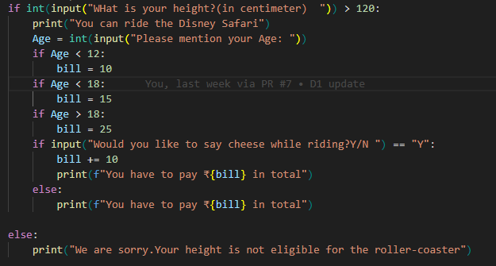
Day 4 - Project Assignments
THE RANDOM MODULE :-
The random module in Python provides functions for generating random numbers.
It's a built-in module, so you don't need to install any additional libraries to use it.
The random module is commonly used for tasks such as generating random numbers, selecting random elements from sequences, and simulating randomness in various applications.
Here's a comprehensive overview of the random module in Python:
Importing the random Module:
To use the random module, you need to import it:
Generating Random Numbers:
Random Float between 0 and 1:
random.random():Returns a random float between 0 (inclusive) and 1 (exclusive).
Random Integer in a Range:
random.randint(a, b):Returns a random integer between a and b, inclusive.
Random Floating-Point Number in a Range:
random.uniform(a, b):Returns a random float between a and b, where a and b can be any floating-point numbers.
Random Sequences:
Random Element from a Sequence:
random.choice(sequence):Returns a random element from the given sequence (e.g., list, tuple, string).
Shuffling a Sequence In-Place:
random.shuffle(sequence):Shuffles the elements of the given sequence in-place.
Random Sample from a Sequence:
random.sample(sequence, k):Returns a list of k unique random elements from the given sequence.
Randomness Control:
Setting the Random Seed:
random.seed(seed):Initializes the random number generator with a specific seed value.
Using the same seed value will produce the same sequence of random numbers, which is useful for reproducibility.
Random Integer from a Range with a Step:
random.randrange(start, stop, step):Returns a random integer from the specified range with the given step size.
Random Distributions:
Random distributions are mathematical functions or models that describe the likelihood of different outcomes in a random process.
In Python, the random module provides functions to generate random numbers that follow specific probability distributions.
Here are some common random distributions available in the random module:
Random Gaussian (Normal) Distribution:
random.gauss(mu, sigma): Returns a random float from a Gaussian (normal) distribution with the specified mean (mu) and standard deviation (sigma) .
The normal distribution, also known as the Gaussian distribution, is a bell-shaped curve. It's characterized by two parameters: mean (mu) and standard deviation (sigma).
Many natural phenomena follow a normal distribution.
Example: random.gauss(0, 1) generates random numbers from a standard normal distribution with mean 0 and standard deviation 1.
Uniform Distribution (random.random()):
The uniform distribution generates random numbers that are equally likely to occur within a specified range.
It's often used when you want each possible outcome to have the same probability of occurring.
Example: random.random() generates random floats between 0 and 1.
Binomial Distribution random.randint(0, 1) or random.getrandbits(1):
The binomial distribution models the number of successful outcomes in a fixed number of trials, where each trial has only two possible outcomes (usually success or failure).
It's defined by two parameters: n (the number of trials) and p (the probability of success on each trial).
Example: Simulating a coin toss, where p=0.5.n=1 and p=0.5
Poisson Distribution: (random.poisson(lam))
The Poisson distribution models the number of events occurring in a fixed interval of time or space.
It's defined by a single parameter lam (lambda), which represents the average rate of events.
Example: Modeling the number of emails received in an hour, where lam is the average rate.
The log-normal distribution is used to model data that is skewed and cannot be described by a normal distribution.
It's defined by two parameters: mu (the mean of the natural logarithm of the data) and sigma (the standard deviation of the natural logarithm of the data).
Example: Modeling the distribution of stock prices.
The triangular distribution is defined by three parameters: low (the minimum value), high (the maximum value), and mode (the peak of the distribution).
It's often used when the exact shape of the distribution is unknown but bounded by a range.
Example: Modeling uncertainty in project completion time.
Keep in mind that while the random module provides pseudo-random numbers,
it's deterministic when initialized with the same seed value. For cryptographic purposes, you should use the secrets module,
which is designed for generating cryptographically secure random numbers.
The import statement in Python
The import statement in Python is used to bring external modules or packages into your Python script.
Here are several important facts about the import statement and how it works:
Module Import
The primary purpose of the import statement is to import external modules or Python files (also called modules) into your code. These modules contain functions, variables, and classes that can be reused in your program.
Standard Library Modules
Python comes with a rich standard library that includes many pre-built modules for common tasks. These modules can be imported and used without any additional installation.
Third-Party Modules:
In addition to the standard library, there is a vast ecosystem of third-party libraries and modules available in the Python Package Index (PyPI). These can be installed using package managers like pip and then imported into your code.
import Syntax:
The basic syntax for importing a module is import module_name. For example, import math imports the math module.
Alias with as:
You can assign an alias to a module when importing it. This is useful for making module names shorter or avoiding naming conflicts. For example, import math as m assigns the alias m to the math module.
Importing Specific Items:
You can import specific functions, variables, or classes from a module using the from keyword. For example, from math import sqrt imports only the sqrt function from the math module.
Wildcard Import:
While generally discouraged, you can use the * wildcard to import all items from a module. For example, from math import * imports all functions and variables from the math module.
Module Search Path:
Python searches for modules in directories listed in the sys.path variable. This path includes the current directory and standard library locations. You can modify this path if needed.
Relative Imports:
In package structures, you can use relative imports to import modules within the same package without specifying the full path.
Circular Imports:
Circular imports (where modules import each other in a loop) should be avoided as they can lead to unexpected behavior. Proper organization of code can help prevent circular imports.
__init__.py:
To treat a directory as a package and enable importing from it, it must contain an empty __init__.py file. This file can also contain initialization code.
if __name__ == "__main__":
Often, modules are designed to be reusable, and they include code that should not run when imported. To prevent this code from running when the module is imported, it's common to use the if __name__ == "__main__": construct.
Namespace:
Importing a module introduces a new namespace where the names defined in the module are accessible. To access items in the module, use dot notation, e.g., module_name.item_name.
Dynamic Import
In some cases, you might need to import a module dynamically based on user input or other conditions. You can use functions like importlib.import_module() for dynamic imports.
Performance Considerations
Importing large modules or using wildcard imports can have performance implications. It's generally recommended to import only what you need to keep code efficient.
Error Handling:
If a module cannot be found or imported, an ImportError is raised. You can use try and except blocks to handle these errors gracefully.
sys.modules:
Python caches imported modules in the sys.modules dictionary. This cache is used to avoid redundant imports and to ensure that imported modules are singletons.
Package Structure:
In larger projects, organizing modules into packages (directories with __init__.py files) helps manage code and prevent naming conflicts.
Re-importing:
Python only imports a module once per execution. Subsequent import statements for the same module reuse the already imported module.
Importing from Parent Directories:
You can use relative imports to import modules from parent directories by using .. in the import statement.
In summary, the import statement is a fundamental part of Python that enables code reuse, modularization,
and simplifies the access to a wide range of libraries and packages.
Understanding how to use it effectively is essential for writing maintainable and efficient Python code
List opetations in Python:
Python offers a wide range of operations for working with lists, which are one of the most commonly used data structures in the language. Below, I'll explain various list operations in detail without providing specific code examples:
Basic operations:
Creating Lists:
Lists are created by enclosing a comma-separated sequence of elements within square brackets [...].
Lists can contain elements of different data types, including numbers, strings, and even other lists.
Accessing Elements:
List elements are accessed using indexing, starting with an index of 0 for the first element.
Negative indexing allows you to access elements from the end of the list, with -1 representing the last element.
Slicing:
Slicing allows you to extract a portion of a list by specifying a start index, an end index (exclusive), and an optional step size.
Slices create a new list containing the selected elements.
Modifying Elements:
Lists are mutable, which means you can change their elements by assigning new values to specific indices.
You can use indexing to replace or update individual elements.
Adding Elements:
You can add elements to a list using various methods:
append(): Adds an element to the end of the list.
insert(): Inserts an element at a specified index.
Concatenation: You can use the + operator or the extend() method to concatenate two lists.
Removing Elements:
You can remove elements from a list using methods such as:
remove(): Removes the first occurrence of a specific value.
pop(): Removes and returns the element at a specified index.
del: Deletes elements by index or slices.
Searching for Elements:
You can check if an element exists in a list using the in keyword.
To find the index of an element, you can use the index() method.
You can also count the occurrences of an element with the count() method.
Sorting:
Lists can be sorted in ascending or descending order using the sort() method.
The sorted() function returns a new sorted list without modifying the original list.
Reversing:
You can reverse the order of elements in a list using the reverse() method.
Length and Empty Checks:
You can find the length of a list using the len() function.
To check if a list is empty, you can use if not my_list: or if len(my_list) == 0:.
Copying Lists:
Creating a shallow copy of a list can be done using the copy() method or slicing.
For deep copies (copies of nested lists), you can use the copy.deepcopy() function from the copy module.
List Comprehensions:
List comprehensions provide a concise way to create lists based on existing lists.
They allow you to apply an expression to each item in a list and optionally filter items.
Iteration:
You can iterate over the elements of a list using for loops.
The enumerate() function can be used to iterate with both the index and value of each element.
List Methods and Functions:
Python provides several built-in list methods and functions, including min(), max(), sum(), and any(), which can be used for various list operations.
List Concatenation and Repetition:
Lists can be concatenated using the + operator.
You can repeat a list by multiplying it with an integer.
List Membership Testing:
The in and not in operators allow you to test if an element is present in a list, returning a Boolean value.
List Conversion:
You can convert other iterable objects, such as strings and tuples, into lists using the list() constructor.
List Operations Efficiency:
Be mindful of the time complexity of list operations. Appending and accessing by index are generally efficient operations, but inserting or removing elements can be slower for large lists.
Consider using other data structures like sets or dictionaries for specific use cases.
Advance Operations
List Comprehension with Conditionals:
In addition to basic list comprehensions, you can use conditional expressions to filter and transform elements in a list comprehensively.
List Iteration Functions:
Python provides built-in functions like map(), filter(), and reduce() (in Python 2, and available in Python 3 through the functools module) that can be used with lists for more complex operations.
List Concatenation Efficiency:
While list concatenation with + is convenient, it can be inefficient when dealing with large lists. Using methods like extend() or list comprehension can be more efficient.
List to String Conversion:
You can convert a list of strings into a single string using the join() method, which concatenates the elements with a specified separator.
Copying Lists Efficiently:
For shallow copies of lists, you can also use slicing with [:] to create a new list with the same elements.
To create a shallow copy using the list() constructor, you can pass an existing list as an argument, e.g., new_list = list(old_list).
List Mutability:
Lists are mutable, meaning you can change their elements. This mutability can lead to unexpected behavior if you're not careful when modifying lists.
List vs. Tuple:
While lists are mutable, tuples are immutable. Tuples can be used in situations where you want to ensure that the data remains unchanged.
List Concatenation with *:
You can use the * operator to concatenate multiple copies of a list together. For example, new_list = [1, 2] * 3 creates a list [1, 2, 1, 2, 1, 2].
List as Stack and Queue:
Lists can be used as both stacks (Last-In, First-Out) and queues (First-In, First-Out) with the append() and pop() methods for stacks, and append() and pop(0) for queues.
These additional points provide further context and details about working with Python lists. Depending on your specific use case, some of these points may be particularly relevant and important.
Code:-
Day 5 and 6 culminated - Tuple, Loops and Functions
Tuples
Creating Tuples:
Tuples are created by enclosing a comma-separated sequence of values within parentheses ( ). For example:
my_tuple = (1, 2, 3, 'apple', 'banana')
Accessing Elements:
Elements in a tuple are accessed using indexing, just like in lists. Indexing starts from 0. For example:
first_element = my_tuple[0] # Access the first element
last_element = my_tuple[-1] # Access the last element
Tuples Are Immutable:
Tuples cannot be modified once they are created. You cannot add, remove, or change elements. This immutability is a key feature of tuples.
Slicing:
You can create slices of a tuple, just like with lists. Slicing returns a new tuple containing the selected elements. For example:
my_tuple = (1, 2, 3, 'apple', 'banana')
my_slice = my_tuple[1:4] # Creates a new tuple with elements (2, 3, 'apple')
Nesting Tuples:
Tuples can contain other tuples, creating nested tuples. For example:
nested_tuple = (1, (2, 3), ('apple', 'banana'))
Tuples Are Heterogeneous:
Tuples can contain elements of different data types, such as numbers, strings, and other objects.
Tuples Are Ordered:
The order of elements in a tuple is maintained, just like in a list. This means you can rely on the position of elements within a tuple.
Tuple Packing and Unpacking:
Tuples can be used to "pack" multiple values into a single variable. You can also "unpack" a tuple to assign its values to multiple variables. For example:
point = (3, 4)
x, y = point # Unpack the tuple into variables
Iterating Over Tuples:
You can use loops to iterate over the elements of a tuple, just like with lists. For example:
for item in my_tuple:
print(item)
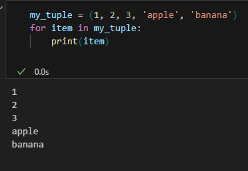
Tuples as Dictionary Keys:
Tuples can be used as dictionary keys because they are hashable (unlike lists). This allows you to create dictionaries with composite keys.
Returning Multiple Values:
Tuples are often used to return multiple values from a function. A function can return a tuple, and you can easily unpack the values.
The collections module provides a namedtuple factory function. Named tuples are similar to regular tuples, but their elements have names. This can make your code more self-explanatory.
Size Efficiency:
Tuples are more memory-efficient than lists, as they are fixed in size and do not require additional overhead for dynamic resizing.
Use Cases:
Tuples are used in various situations, including:
Coordinate Data: Storing coordinates (x, y) or (latitude, longitude).
Database Records: Representing rows of a database query result.
Multiple Return Values: Returning multiple values from a function.
Dictionary Keys: Creating keys for dictionaries with multiple components.
Configuration Settings: Storing configuration settings for applications.
String Formatting: Using tuples to format strings.
Data Integrity: When you want to ensure that the data does not change.
Tuples are particularly useful when you want to protect the integrity of data or when you need to work with collections that should not be modified.
Branching
If Statement:
The if statement allows you to execute a block of code if a specified condition is true.
If the condition is false, the block is skipped.
The if statement in Python is used for decision-making and executes a block of code
only if a specified condition is evaluated as true. Here is a comprehensive
explanation of the if statement, along with various use cases and examples:
Syntax:
if condition:
# Code block to execute if the condition is true
Use Cases and Examples:
Simple If Statement:
Executes a block of code if a condition is true.
x = 10
if x > 5:
print("x is greater than 5")
Nested If Statements:
Includes an if statement inside another if or else block
in order to create more complex decision-making logic.
x = 10
if x > 5:
if x > 8:
print("x is greater than 8")
else:
print("x is greater than 5 but not greater than 8")
else:
print("x is less than or equal to 5")
Ternary Operator:
Provides a shorthand way to write simple if-else statements in a single line.
x = 10
result = "x is greater than 5" if x > 5 else "x is less than or equal to 5"
print(result)
Combining Logical Operators:
Utilizes logical operators such as and, or,
andnot to create complex conditions and make decisions based on
multiple conditions in the if statement.
x = 10
y = 12
if x > 5 and y < 15:
print("Both conditions are true")
else:
print("At least one of the conditions is false")
Membership Test:
Checks whether a value exists in a sequence or collection using the in keyword.
fruits = ['apple', 'banana', 'cherry']
if 'apple' in fruits:
print("Apple is in the list")
Value Comparisons:
Compares values for equality (==), inequality (!=),
or other comparisons such as greater than (>),
less than (<), greater than or equal to (>=),
and less than or equal to (<=).
x = 10
if x != 5:
print("x is not equal to 5")
The if statement is an essential tool for controlling the flow of your program based on
various conditions. It allows your program to make decisions dynamically and execute
specific blocks of code accordingly.
If-Else Statement:
The if-else statement extends the if statement by executing a block of code when the condition is true and another block when it's false.
The if-else statement in Python is used for decision-making and enables the execution of
different blocks of code based on the evaluation of a condition. When the condition specified in the if
statement is true, the code block under if is executed. If the condition is false, the code block
under the else statement is executed.
Here's a detailed explanation of the if-else statement along with an example:
Example: Syntax:
if condition:
# Code block executed when condition is true
else:
# Code block executed when condition is false
Explanation:
The if-else statement allows for the execution of one block of code if a specified condition is met and another block of code
to be executed if the condition is not met. It helps in controlling the flow of the program based on the condition's evaluation.
Example:
x = 10
if x > 5:
print("x is greater than 5")
else:
print("x is less than or equal to 5")
Elif Statement:
The elif statement in Python is an abbreviation of "else if." It is used in conjunction with the if statement to
handle multiple conditions in a program. When you want to check for multiple conditions, the elif statement allows you to
specify additional conditions to be checked if the conditions in the preceding if statement(s) are not met.
Here's an explanation of the elif statement with an example: Syntax:
if condition1:
# Code block executed if condition1 is true
elif condition2:
# Code block executed if condition2 is true
else:
# Code block executed if all conditions are false
Example:-
x = 10
if x > 10:
print("x is greater than 10")
elif x == 10:
print("x is equal to 10")
else:
print("x is less than 10")
In this example, if the value of x is greater than 10, the statement "x is greater than 10" is printed. If the value of x is equal to 10, the statement "x is equal to 10" is printed. If neither of these conditions is met, the else block is executed, and the statement "x is less than 10" is printed.
The elif statement is beneficial when you need to handle multiple conditions and execute specific code blocks depending on the outcomes of those conditions. It allows for the streamlined implementation of decision-making logic in Python.
While Loop:
The while loop is used to execute a block of code repeatedly as long as a
specified condition is true. It continues looping until the condition becomes false.
while condition:
# Code block
The while loop in Python is a control flow statement that allows you to execute a block of code repeatedly as long as
a specified condition is true. It continues to execute the block of code as long as the condition remains true,
and it terminates when the condition becomes false.
Syntax:
while condition:
# Code block to be executed while the condition is true
while condition:
# Code block to be executed while the condition is true
Example:
count = 0
while count < 5:
print(f"Count is {count}")
count += 1
Use Cases of while-loop:
Iterating through Data:
Use a while loop when the number of iterations is not known in advance, such as when processing data of indeterminate length.
Code :-
data = [1, 3, 5, 7, 9, 11, 13]
index = 0
while index < len(data):
print(data[index])
index += 1
User Input Validation:
Utilize a while loop to repeatedly prompt a user for input until valid input is provided, ensuring the program doesn't proceed until the input meets specific criteria.
Code :-
while True:
user_input = input("Please enter a number: ")
if user_input.isdigit():
number = int(user_input)
print(f"The square of {number} is {number**2}.")
break
else:
print("Invalid input. Please enter a valid number.")
Task Automation:
Employ a while loop to automate a series of actions or calculations that need to be repeated until a specific condition is met.
Code :-
count = 0
while count < 5:
print("Performing task...")
# Perform specific task here
count += 1
Data Processing and Analysis:
Apply a while loop for tasks such as data filtering, analysis, or manipulation that require continuous processing until a certain outcome or condition is reached.
Code :-
data = [4, 8, 15, 16, 23, 42]
index = 0
while index < len(data):
if data[index] % 2 == 0:
print(f"{data[index]} is even.")
else:
print(f"{data[index]} is odd.")
index += 1
Implementing Game Logic:
Use a while loop to simulate game scenarios, control game flow, or manage player interactions until certain game conditions are met, such as winning or losing.
Code :-
player_health = 100
while player_health > 0:
# Game logic goes here
print(f"Player health: {player_health}")
# Reduce player health in some scenarios
player_health -= 10
print("Game over! Player defeated.")
Handling External Events:
Utilize a while loop to manage and respond to external events that occur during program execution, such as receiving and processing incoming data or events from external sources.
Code :-
import time
external_event_occurred = False
while not external_event_occurred:
# Check for external events
print("check1")
time.sleep(6) # Simulate checking for events every 1 second
print("output after sleeping 5 seconds")
# Set external_event_occurred to True based on some condition
external_event_occurred = True
Simulating Simultaneous Processes:
Implement a while loop to simulate concurrent or parallel processes within a program, enabling the execution of multiple tasks simultaneously.
Code :-
process1_complete = False
process2_complete = False
while not (process1_complete and process2_complete):
# Simulate process 1
process1_complete = True # Set to True when process 1 is complete
# Simulate process 2
process2_complete = True # Set to True when process 2 is complete
Example:
import threading
# Simulating two concurrent processes: temperature monitoring and data analysis
temperature_normal = False
data_processed = False
# Function to simulate temperature monitoring process
def temperature_monitoring():
global temperature_normal
while not temperature_normal:
current_temperature = read_temperature_sensor() # Simulating temperature sensor reading
if current_temperature > 100:
print(f"High temperature alert! Current temperature: {current_temperature}°C")
# Trigger cooling system or other actions for temperature control
temperature_normal = True # Simulating the resolution of the issue
# Function to simulate data analysis process
def data_analysis():
global data_processed
while not data_processed:
data = retrieve_data_from_database() # Simulating data retrieval from a database
# Perform complex data analysis operations
analyzed_data = perform_analysis(data)
print(f"Data analysis complete. Results: {analyzed_data}")
data_processed = True # Simulating the completion of data analysis
# Simulating sensor reading function
def read_temperature_sensor():
# Simulating temperature sensor reading
return 102 # Simulated value for demonstration purposes
# Simulating data retrieval function
def retrieve_data_from_database():
# Simulating data retrieval from a database
return [23, 45, 67, 89, 12] # Simulated data for demonstration purposes
# Simulating data analysis function
def perform_analysis(data):
# Simulating data analysis operations
return sum(data) / len(data) # Simulated analysis result for demonstration purposes
# Creating threads for each process
thread1 = threading.Thread(target=temperature_monitoring)
thread2 = threading.Thread(target=data_analysis)
# Starting both threads
thread1.start()
thread2.start()
# Waiting for both threads to complete
thread1.join()
thread2.join()
print("Simulated processes of temperature monitoring and data analysis are complete.")
Network Communication and I/O Operations:
Use a while loop to manage network communication or input/output (I/O) operations, ensuring continuous data transmission or reception until the desired data is obtained or sent.
Code :-
data_received = False
while not data_received:
# Check for incoming data
# Set data_received to True when desired data is received
pass
Example :
we create a simple server that listens for incoming connections on a specified host and port. It continuously accepts incoming connections using a while loop and processes data received from the client. The server sends a response back to the client confirming the successful receipt of data. The while loop ensures that the server continually listens for incoming data and responds to client requests, allowing for continuous network communication and I/O operations.
import socket
# Server configuration
HOST = '127.0.0.1' # Standard loopback interface address
PORT = 65432 # Port to listen on
# Create a socket object
with socket.socket(socket.AF_INET, socket.SOCK_STREAM) as s:
# Bind the socket to the host and port
s.bind((HOST, PORT))
# Listen for incoming connections
s.listen()
print(f"Server is listening on {HOST}:{PORT}")
while True:
# Accept incoming connection
conn, addr = s.accept()
with conn:
print('Connected by', addr)
while True:
# Receive data from the client
data = conn.recv(1024)
if not data:
break
# Process received data
print(f"Received data: {data.decode()}")
# Send back a response
conn.sendall(b'Data received successfully')
Algorithm Implementation:
Apply a while loop when implementing iterative algorithms, such as searching, sorting, or numerical computations that require repeated steps until a specific condition or accuracy level is achieved.
Code :-
number = 24
while number > 1:
if number % 2 == 0:
number = number // 2
else:
number = 3 * number + 1
print(number)
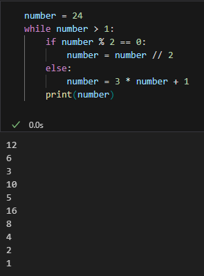
Real-time Data Processing:
Utilize a while loop for real-time data processing tasks, enabling continuous monitoring, analysis, and response to changing data conditions or events.
Code :-
while True:
# Monitor real-time data
# Perform data analysis and processing tasks
# Respond to changing data conditions
pass
Example:
import random
import time
# Simulating real-time data processing: stock price monitoring
stock_price_threshold = 500 # Threshold for stock price alert
stock_price_normal = True
# Function to simulate real-time data processing for stock prices
def process_stock_prices():
global stock_price_normal
while stock_price_normal:
current_stock_price = get_stock_price() # Simulating fetching current stock price
if current_stock_price > stock_price_threshold:
print(f"Stock price is above the threshold: {current_stock_price}. Alert triggered!")
# Execute actions for handling the high stock price
else:
print(f"Stock price is normal: {current_stock_price}.")
time.sleep(2) # Simulating real-time delay
# Simulating function to get current stock price
def get_stock_price():
# Simulating fetching current stock price
return random.randint(400, 600) # Simulating stock price between 400 and 600
# Starting real-time data processing
process_stock_prices()
When using a while loop, it's essential to ensure that an exit condition is met at some point to prevent infinite looping, which can lead to system freezes or crashes. It's also important to update loop control variables within the loop to ensure progress towards the exit condition.
For Loop:
The for loop in Python is a fundamental control flow structure that allows you to iterate over elements of a sequence, such as lists, tuples, strings, or other iterable objects. It is commonly used when you have a block of code that you want to repeat a fixed number of times.
Examples:
Iterating over a list of elements:
the for loop is used to iterate through each element in a list. The variable fruit takes the value of each element in the fruits list one by one. This can be useful when you want to perform an operation on each item in a list, such as printing, manipulating, or analyzing the elements.
# Example: Printing each element in a list
fruits = ['apple', 'banana', 'cherry', 'date']
for fruit in fruits:
print(fruit)
Processing elements in a dictionary:
The for loop, along with the items() method, allows you to iterate through the key-value pairs in a dictionary. The variables key and value take the keys and corresponding values of each key-value pair in the person dictionary. This is helpful when you need to perform operations on each key-value pair in a dictionary.
# Example: Printing keys and values of a dictionary
person = {'name': 'John', 'age': 30, 'city': 'New York'}
for key, value in person.items():
print(f'{key}: {value}')
Iterating through a range of numbers:
Using the range() function with the for loop allows you to iterate over a sequence of numbers. In the given example, the for loop is used to print numbers from 1 to 5. This is commonly used when you need to perform an operation a specific number of times.
# Example: Printing numbers from 1 to 5
for i in range(1, 6):
print(i)
Iterating over characters in a string:
The for loop can be used to iterate through each character in a string. In this example, it is used to count the number of vowels in a given word. This is useful for tasks such as analyzing text data, string manipulation, or performing operations based on specific characters in a string.
# Example: Counting the number of vowels in a string
word = "hello"
vowels = 0
for char in word:
if char in 'aeiou':
vowels += 1
print(f'The number of vowels in "{word}" is {vowels}.')
Processing elements in a nested list:
Nested lists can be iterated using nested for loops. In this case, the for loop is used to flatten a nested list into a single list. This is helpful when you want to process elements in a nested structure or perform operations on each individual element within the nested lists.
# Example: Flattening a nested list
nested_list = [[1, 2, 3], [4, 5, 6], [7, 8, 9]]
flattened_list = []
for sublist in nested_list:
for item in sublist:
flattened_list.append(item)
print(flattened_list)
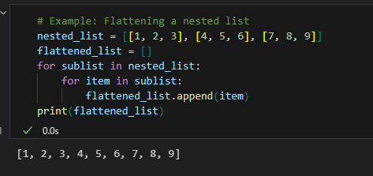
Performing operations based on certain conditions:
The for loop can be combined with conditional statements (such as if statements) to perform operations based on specific conditions. In the provided example, even numbers are filtered from a list of numbers. This is useful when you need to filter, process, or manipulate elements based on certain conditions or criteria.
# Example: Filtering even numbers from a list
numbers = [1, 2, 3, 4, 5, 6, 7, 8, 9, 10]
even_numbers = []
for num in numbers:
if num % 2 == 0:
even_numbers.append(num)
print(even_numbers)
Iterating through files in a directory:
Using the os.listdir() function along with the for loop enables you to iterate through files in a directory. The variable file_name takes the name of each file in the directory one by one. This is beneficial when you need to perform operations on files within a directory, such as reading, writing, or processing file data.
# Example: Printing the names of all files in a directory
import os
for file_name in os.listdir('.'):
print(file_name)
Understanding these real-world use cases of the for loop in Python can significantly enhance your ability to
write efficient and effective code for various tasks, ranging from data processing and manipulation to file
handling and text analysis.
These examples demonstrate some common use cases of the for loop in Python. It is a powerful tool for automating
repetitive tasks and processing collections of data. Understanding how to effectively use for loops is essential
for writing efficient and readable Python code.
Break Statement:
Continue Statement:
The continue statement is used to skip the rest of the code inside a loop for the current iteration.
It jumps to the next iteration without executing the remaining code.
Example:
for element in sequence:
if condition:
continue
# Code block executed if condition is not met
The continue statement is used in Python to skip the rest of the code inside a loop for the current iteration and proceed to the next iteration.
When the continue statement is encountered, the remaining code in the loop is skipped, and the loop immediately begins the next iteration.
Here's a detailed explanation of the continue statement with some illustrative examples: Example 1: Skipping Odd Numbers
for i in range(1, 6):
if i % 2 == 1:
continue # Skip the rest of the loop for odd numbers
print(f"The number form 1 to 10 \nEven number: {i}")
In this example, the continue statement is used to skip the rest of the loop for odd numbers. When the loop encounters an odd number,
the continue statement skips the print statement, and the loop proceeds with the next iteration.
Example 2: Skipping Specific Values
nums = [1, 2, 3, 4, 5]
for num in nums:
if num == 3:
print("Encountered 3, skipping...")
continue # Skip the rest of the loop when num is 3
print(f"Current number: {num}")
In this case, the continue statement is employed to skip the rest of the loop when the value of num is 3. When the loop encounters the value 3, it prints a message and continues with the next iteration without executing the remaining code in the loop.
Example 3: Skipping Specific Conditions
words = ['apple', 'banana', 'cherry', 'date', 'grape']
for word in words:
if 'a' not in word:
continue # Skip the words that do not contain the letter 'a'
print(f"Word containing 'a': {word}")
In this example, the continue statement is utilized to skip words that do not contain the letter 'a'.
When a word without the letter 'a' is encountered, the continue statement bypasses the
print statement and moves on to the next iteration.
The continue
statement is beneficial when you want to skip certain parts of a loop's iteration based on specific conditions.
It allows for more granular control over the execution flow within loops.
Pass Statement:
The pass statement in Python is a null operation that essentially does nothing when it is executed. It is used as a placeholder
when a statement is required syntactically but no action is needed.
Some common use cases of the pass statement include:
Placeholder for future code:
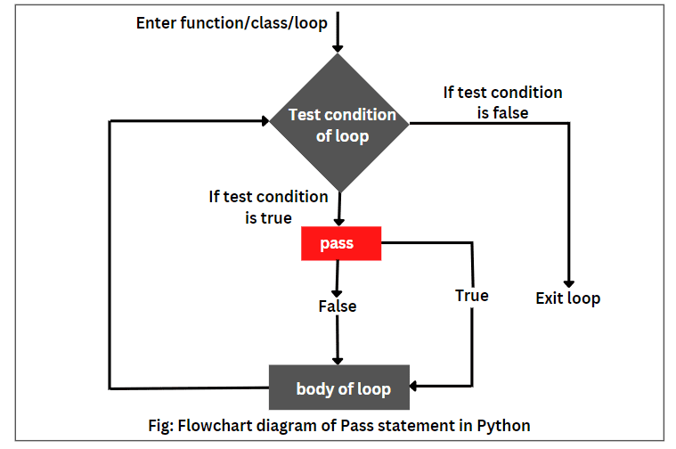
Suppose you are creating a function that will be implemented later. You can use the pass statement as a placeholder to
avoid syntax errors until you fill in the function's details:
Sometimes, when you are designing a program, you might want to create the structure first and fill in the details later.
In such cases, you can use the pass statement as a placeholder to avoid syntax errors.
if condition:
pass # Placeholder for future code
else:
# Implement the code for the else condition
pass
Empty function or class:
When defining a function or a class that you intend to implement later, using the pass statement allows you to create
an empty function or class without causing any errors.
Imagine you are designing a framework where you define the structure of classes that will be implemented by users later.
You can use the pass statement to create empty classes that can be extended:
def empty_function():
pass # Placeholder for future implementation
class EmptyClass:
pass # Placeholder for future implementation
class BaseModel:
def process_data(self):
pass # Placeholder for future implementation
class CustomModel(BaseModel):
def process_data(self):
# Implement custom data processing
pass
# CustomModel inherits the structure from BaseModel and overrides the process_data method
custom_instance = CustomModel()
custom_instance.process_data()
the pass statement to create an empty class as a placeholder for future implementation in a Python program:
# Creating an empty class as a placeholder for future implementation
class DataProcessor:
pass
# Instantiating the DataProcessor class and planning for future implementation
processor = DataProcessor()
Temporary code omission:
In testing scenarios, you might want to temporarily omit a block of code. Here's an example where you want to test the loop
without the actual block of code inside:
for item in items:
# Temporary omission of code for testing
pass
items =[1,2,3,4]
for item in items:
# Temporary omission of code for testing
if item == 3:
pass
print("Item passed")
print(item,end='')
# Suppose we're checking if a number is even or odd
number = 6
if number % 2 == 0:
pass # Placeholder for future implementation of even number handling
print("The number is even")
else:
pass # Placeholder for future implementation of odd number handling
Minimal class implementation:
When designing an abstract class meant to be inherited by other classes, you can use the pass statement to provide
a minimal implementation that can be overridden by the subclasses:
class BaseClass:
def some_method(self):
pass # To be overridden by subclasses
class Animal:
def make_sound(self):
pass # To be overridden by subclasses
class Dog(Animal):
def make_sound(self):
print("Woof")
class Cat(Animal):
def make_sound(self):
print("Meow")
Try-Except Block:
In Python, the try-except block is used to handle exceptions or errors that may occur during the execution of a program.
It allows you to anticipate and deal with potential errors, preventing your program from crashing unexpectedly. Here's an explanation with relevant examples:
Basic Examples:
In this example, the try block attempts to perform the division a / b. However, since b is 0, it would result
in a ZeroDivisionError. The except block catches this specific error and prints a custom error message,
preventing the program from crashing.
# Handling a potential division by zero error
a = 10
b = 0
try:
result = a / b
except ZeroDivisionError:
print("Error: Division by zero is not allowed.")
Handling Input Conversion Errors:
In this example, the try block attempts to convert the user input to an integer using the int() function.
If the input provided by the user cannot be converted to an integer, it raises a ValueError.
The except block catches this error and prints a custom error message, guiding the user to enter a valid integer.
# Handling potential value conversion errors
try:
num = int(input("Enter a number: ")) # entered a string
except ValueError:
print("Error: Please enter a valid integer.")
By using the try-except block, you can ensure that your program continues to execute even when it encounters errors.
It provides a way to handle such errors gracefully, allowing you to display helpful error messages or perform
alternative actions.
Finally Block:
BASIC:
In Python, the finally block is used in conjunction with the try and except blocks.
It is used to define clean-up actions that must be executed, whether an exception occurs
or not. The code inside the finally block is executed regardless of whether an exception
is raised or not. Here's an explanation with relevant examples:
# Using the finally block for cleanup
try:
f = open("example_file.txt", "r")
# Perform some file operations
except FileNotFoundError:
print("Error: File not found.")
finally:
if f:
f.close()
Using Finally for Resource Release
In this example, the try block attempts to open a file for reading.
If the file is not found, it raises a FileNotFoundError. The finally block ensures that
the file is closed, regardless of whether an exception is raised or not. This is crucial
for releasing external resources or performing necessary clean-up operations.
# Using the finally block to release resources
lock = threading.Lock()
try:
lock.acquire()
# Perform some critical section operations
except Exception as e:
print(f"Error: {e}")
finally:
lock.release()
In this example, the finally block ensures that the thread lock is released even if an exception occurs within the critical
section. Releasing the lock in the finally block guarantees that the shared resource is freed, preventing potential deadlocks
or resource leaks.
By using the finally block, you can ensure that certain actions, such as releasing resources, closing files, or cleaning up
operations, are always executed, regardless of whether exceptions are raised or not. This helps in maintaining the robustness and
reliability of your code, particularly when dealing with critical resources or external operations.
Loops
Functions
Banking_roulette
This code is a mini project.
Roulette is a banking game, and all bets are placed against the bank—that is, the house, or the proprietor of the game. Rules of banking roulette game
The Code :-
import random
# 🚨 Don't change the code below 👇
# test_seed = int(input("Create a seed number: "))
# random.seed(test_seed)
# Split string method
names_string = input("Give me everybody's names, separated by a comma. ")
names = names_string.split(", ")
# 🚨 Don't change the code above 👆
# Write your code below this line 👇
rand_integer = random.randint(0, (len(names) - 1))
print(f"{names[rand_integer]} is going to buy the meal today!")
Mini Head tail projrct
The Code:
import random
# 🚨 Don't change the code below 👇
import random
rand_integer = random.randint(0, 1)
if rand_integer == 1:
print("Heads")
else:
print("Tails")
import random
rand_integer = random.randint(1, 2)
if rand_integer == 1:
print("Heads")
else:
print("Tails")
# Rock wins against scissors.
# Scissors win against paper.
# Paper wins against rock.
pc = [rock, paper, scissors]
Players_choice = int(input("What do you choose? Type 0 for Rock, 1 for Paper or 2 for Scissors.\n"))
# print(len(pc))
# print(random.randint(0, 2))
# pc1 = pc[random.randint(0, (len(pc) - 1))])
Computers_choice = random.randint(0, (len(pc) - 1))
if Players_choice == 0:
print("\n", rock)
print(f"Computer chose:\n{pc[Computers_choice]}")
if Computers_choice == 0:
print("You Draw :| ")
elif Computers_choice == 1:
print("You Lost.Game Over :( ")
else:
print("You Win :) ")
else:
print("Invalid Input!! Please Enter values as per instructions.")
Fizz-Buzz Game
The Fizz Buzz game is a simple programming task that is often used in coding interviews to assess a candidate's familiarity with basic
programming concepts. The game is typically played as follows:
Players take turns counting up from 1, with the following rules:
If the number is divisible by 3, the player should say "Fizz" instead of the number.
If the number is divisible by 5, the player should say "Buzz" instead of the number.
If the number is divisible by both 3 and 5, the player should say "FizzBuzz".
This game helps in reinforcing the understanding of concepts like conditional statements and loops, which are fundamental
in programming.
Now, here's a Python code that implements the Fizz Buzz game:
code1:
def fizz_buzz_game(n):
for i in range(1, n+1):
if i % 3 == 0 and i % 5 == 0:
print("FizzBuzz")
elif i % 3 == 0:
print("Fizz")
elif i % 5 == 0:
print("Buzz")
else:
print(i)
# Replace 100 with the desired range of the game
fizz_buzz_game(100)
code2:
for i in range(1, 31):
if i % 15 == 0:
print("FizzBuzz")
elif i % 5 == 0:
print("Buzz")
elif i % 3 == 0:
print("Fizz")
else:
print(i)
In this Python code, the function fizz_buzz_game takes an integer n as input, representing the range of numbers to be played in the game.
The function uses a for loop to iterate through the numbers from 1 to n. Within the loop, the program checks the divisibility
of each number by 3 and 5 using the modulo operator (%) and prints "Fizz", "Buzz", or "FizzBuzz" accordingly. If the number
is not divisible by 3 or 5, it prints the number itself.
Reference
Hard Password Generator
This is code that genarates random password as per the input of choices from the goven letters,numbers and symbols. Hard Password Generator
import random
letters = ['a', 'b', 'c', 'd', 'e', 'f', 'g', 'h', 'i', 'j', 'k', 'l', 'm', 'n', 'o', 'p', 'q', 'r', 's', 't', 'u', 'v', 'w', 'x', 'y', 'z']
Up_letters = ['A', 'B', 'C', 'D', 'E', 'F', 'G', 'H', 'I', 'J', 'K', 'L', 'M', 'N', 'O', 'P', 'Q', 'R', 'S', 'T', 'U', 'V', 'W', 'X', 'Y', 'Z']
numbers = ['0', '1', '2', '3', '4', '5', '6', '7', '8', '9']
symbols = ['!', '#', '$', '%', '&', '(', ')', '*', '+']
print("Welcome to the PyPassword Generator!")
nr_letters = int(input("How many letters would you like in your password?\n"))
nr_Up_letters = int(input("How many Upper-case letters would you like in your password?\n"))
nr_symbols = int(input(f"How many symbols would you like?\n"))
nr_numbers = int(input(f"How many numbers would you like?\n"))
password_list = []
for char in range(1, nr_letters + 1):
password_list.append(random.choice(letters))
for char in range(1, nr_Up_letters + 1):
password_list.append(random.choice(Up_letters))
for char in range(1, nr_symbols + 1):
password_list.append(random.choice(numbers))
for char in range(1, nr_numbers + 1):
password_list.append(random.choice(symbols))
password = ""
for char in password_list:
password += char
print(f"Your password is: {password}")
Heighest Score:
This is a code that determines the highest score among the scores of the student
# 🚨 Don't change the code below 👇
# 78 65 89 86 55 91 64 89
student_scores = input("Input a list of student scores ").split()
for n in range(0, len(student_scores)):
student_scores[n] = int(student_scores[n]) #type: ignore
print(student_scores)
# 🚨 Don't change the code above 👆
# Write your code below this row 👇
# print(max(student_scores))
highest_score = 0
for single_score in student_scores:
if single_score > highest_score: #type: ignore
highest_score = single_score
print(f"The highest score in the class is: {highest_score}")
Average Height
Day 7 - Beginner - Hangman Project
The game Details:
Hangman is a guessing game for two or more players.
One player thinks of a word, phrase, or sentence and the other(s) tries to guess it
by suggesting letters or numbers within a certain number of guesses.
Originally a paper-and-pencil game, there are now electronic versions.
The word to guess is represented by a row of dashes representing each letter or number of the word.
Rules may permit or forbid proper nouns, such as names, places, brands, or slang.
If the guessing player suggests a letter which occurs in the word, the other player
writes it in all its correct positions.
If the suggested letter does not occur in the word, the other player
removes (or alternatively, adds) one element of a hanged stick figure as a tally mark.
Generally, the game ends once the word is guessed, or if the stick figure is complete — signifying
that all guesses have been used.
The player guessing the word may, at any time, attempt to guess the whole word.
In this case, if the word is correct, the game is over and the guesser wins.
Otherwise, the other player may choose to penalize the guesser by adding an element to the diagram.
On the other hand, if the guesser makes enough incorrect guesses to allow the other player to complete
the diagram, the guesser loses. However,
the guesser can also win by guessing all the letters that appear in the word,
thereby completing the word, before the diagram is completed.
#TODO-1 - Randomly choose a word from the word_list and assign it to a variable called chosen_word.
#TODO-2 - Ask the user to guess a letter and assign their answer to a variable called guess. Make guess lowercase.
#TODO-3 - Check if the letter the user guessed (guess) is one of the leters in the chosen_word.
Step 1:
#TODO-1 - Randomly choose a word from the word_list and assign it to a variable called chosen_word.
#Type 1 :
word_list = ["aardvark", "baboon", "camel"]
import random
chosen_word = random.choice(word_list)
guess = input("Guess a letter: ").lower()
for letter in chosen_word:
if letter == guess:
print("Right")
else:
print("Wrong")
#Type 2 :
word_list = ["aardvark", "baboon", "camel"]
import random
chosen_word = random.choice(word_list)
guess = input("Guess a letter: ").lower()
for letter in chosen_word:
print("Right") if letter == guess else print("Wrong")
Step 2:
#TODO-2 - Ask the user to guess a letter and assign their answer to a variable called guess. Make guess lowercase.
Part 1:
#Step 2
import random
word_list = ["aardvark", "baboon", "camel"]
chosen_word = random.choice(word_list)
#Testing code
print(f'Pssst, the solution is {chosen_word}.')
#TODO-1: - Create an empty List called display.
#For each letter in the chosen_word, add a "_" to 'display'.
#So if the chosen_word was "apple", display should be ["_", "_", "_", "_", "_"] with 5 "_" representing each letter to guess.
display = []
word_length = len(chosen_word)
for _ in range(word_length):
display += "_"
guess = input("Guess a letter: ").lower()
#TODO-2: - Loop through each position in the chosen_word;
#If the letter at that position matches 'guess' then reveal that letter in the display at that position.
#e.g. If the user guessed "p" and the chosen word was "apple", then display should be ["_", "p", "p", "_", "_"].
for position in range(word_length):
letter = chosen_word[position]
#print(f"Current position: {position}\n Current letter: {letter}\n Guessed letter: {guess}")
if letter == guess:
display[position] = letter
#TODO-3: - Print 'display' and you should see the guessed letter in the correct position and every other letter replace with "_".
#Hint - Don't worry about getting the user to guess the next letter. We'll tackle that in step 3.
print(display)
Part 2 :
list = ["aardvark", "baboon", "camel"]
import random
word = random.choice(list)
blanks = "_ " * len(word)
# blanks = "0123456789"
print("LOL " + word)
guess = input("Guess a letter: ")
for i in range(len(word)):
if word[i] == guess:
blanks = blanks[:i*3] + guess + blanks[i*3+1:] # i*3 for "_ " three strings in the blanks
# you can add i*2 for "_ "two strings and [:i] & [i+1] for no spaces
print(blanks)
Step 3:
#TODO-3: - Print 'display' and you should see the guessed letter in the correct position and every other letter replace with "_".
Check if the letter the user guessed (guess) is one of the leters in the chosen_word.
#Step 3
import random
word_list = ["aardvark", "baboon", "camel"]
chosen_word = random.choice(word_list)
word_length = len(chosen_word)
#Testing code
print(f'Pssst, the solution is {chosen_word}.')
#Create blanks
display = []
for _ in range(word_length):
display += "_"
#TODO-1: - Use a while loop to let the user guess again. The loop should only stop once the user has guessed all the letters in the chosen_word and 'display' has no more blanks ("_"). Then you can tell the user they've won.
end_of_game = False
while not end_of_game:
guess = input("Guess a letter: ").lower()
#Check guessed letter
for position in range(word_length):
letter = chosen_word[position]
#print(f"Current position: {position}\n Current letter: {letter}\n Guessed letter: {guess}")
if letter == guess:
display[position] = letter
print(display)
#Check if there are no more "_" left in 'display'. Then all letters have been guessed.
if "_" not in display:
end_of_game = True
print("You win.")
#TODO-1: - Create a variable called 'lives' to keep track of the number of lives left.
#Set 'lives' to equal 6.
lives = 6
#Testing code
print(f'Pssst, the solution is {chosen_word}.')
#Create blanks
display = []
for _ in range(word_length):
display += "_"
while not end_of_game:
guess = input("Guess a letter: ").lower()
#Check guessed letter
for position in range(word_length):
letter = chosen_word[position]
# print(f"Current position: {position}\n Current letter: {letter}\n Guessed letter: {guess}")
if letter == guess:
display[position] = letter
#TODO-2: - If guess is not a letter in the chosen_word,
#Then reduce 'lives' by 1.
#If lives goes down to 0 then the game should stop and it should print "You lose."
if guess not in chosen_word:
lives -= 1
if lives == 0:
end_of_game = True
print("You lose.")
#Join all the elements in the list and turn it into a String.
print(f"{' '.join(display)}")
#Check if user has got all letters.
if "_" not in display:
end_of_game = True
print("You win.")
#TODO-3: - print the ASCII art from 'stages' that corresponds to the current number of 'lives' the user has remaining.
print(stages[lives])
Hangman Final :-
This the end result of final project of Hangman game.
#Step 5
import random
#TODO-1: - Update the word list to use the 'word_list' from hangman_words.py
#Delete this line: word_list = ["ardvark", "baboon", "camel"]
from hangman_words import word_list
#TODO-3: - Import the logo from hangman_art.py and print it at the start of the game.
from hangman_art import logo
print(logo)
#Testing code
print(f'Pssst, the solution is {chosen_word}.')
#Create blanks
display = []
for _ in range(word_length):
display += "_"
while not end_of_game:
guess = input("Guess a letter: ").lower()
#TODO-4: - If the user has entered a letter they've already guessed, print the letter and let them know.
if guess in display:
print(f"You've already guessed {guess}")
#Check guessed letter
for position in range(word_length):
letter = chosen_word[position]
#print(f"Current position: {position}\n Current letter: {letter}\n Guessed letter: {guess}")
if letter == guess:
display[position] = letter
#Check if user is wrong.
if guess not in chosen_word:
#TODO-5: - If the letter is not in the chosen_word, print out the letter and let them know it's not in the word.
print(f"You guessed {guess}, that's not in the word. You lose a life.")
#Join all the elements in the list and turn it into a String.
print(f"{' '.join(display)}")
#Check if user has got all letters.
if "_" not in display:
end_of_game = True
print("You win.")
#TODO-2: - Import the stages from hangman_art.py and make this error go away.
from hangman_art import stages
print(stages[lives])
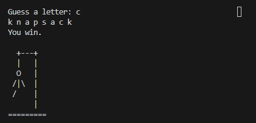
New technique applied : -
Python Shorthand Techniques
Shortcut of if-else statement and loops.It's very useful to write shortcuts of loops and if-else
statement in codes or projects.
In Python, you can use shorthand or the ternary conditional operator to write concise if-else statements. The syntax is:
# Short syntax
result = value_if_true if condition else value_if_false
Here's a breakdown of each part:
condition:
The expression that evaluates to either True or False.
value_if_true:
The value to be assigned if the condition is True.
value_if_false:
The value to be assigned if the condition is False.
Let me provide you with an example:
# Regular if-else statement
x = 10
if x > 5:
result = "Greater than 5"
else:
result = "Not greater than 5"
Shorhand :
# Shorthand using the ternary conditional operator
x = 1
result = "Greater than 5" if x > 5 else "Not greater than 5"
print(result)
For Loop
You can use a one-liner for loop using list comprehensions. It's concise and often used for simple operations on iterable elements.
# Regular for loop
numbers = [1, 2, 3, 4, 5]
squared_numbers = []
print("normal")
for num in numbers:
squared_numbers.append(num**2)
print(squared_numbers)
# Shorthand for loop
numbers = [1, 2, 3, 4, 5]
squared_numbers = [num**2 for num in numbers]
print("ShortHand")
print(squared_numbers)
While Loop:
For the while loop, there isn't a direct shorthand like with list comprehensions,
but you can achieve concise looping using a conditional expression.
# Regular while loop
count = 0
print("Regular")
while count < 5:
print(count)
count += 1
print("Shorthand")
# Shorthand while loop
count = 0
while count < 5: print(count); count += 1
\
Def() (Function Definition):
Function definitions in Python are typically straightforward,
but you can use lambda functions for short, simple functions.
# Regular function
def add(x, y):
return x + y
print("Regular")
print(add(2,3))
print("ShortHand")
# Shorthand function with lambda
addi = lambda x, y: x + y
print(addi(2,3))
shorthand of a nested if-else
The shorthand for a nested if-else with elif statements involves using a conditional expression within the expression
of the outer if or else clause. Here's an example:
# Regular nested if-else with elif statements
x = 10
y = 5
if x > y:
result = "x is greater than y"
elif x < y:
result = "x is less than y"
else:
result = "x is equal to y"
print("Regular")
print(result)
# Shorthand nested if-else with elif
x = 10
y = 5
resulti = "x is greater than y" if x > y else "x is less than y" if x < y else "x is equal to y"
print("ShortHand")
print(resulti)
In the shorthand version, the conditional expressions are nested within each other to achieve the same logic
as the regular nested if-else with elif statements.
While this can make the code more concise, it's crucial to consider readability. If the logic becomes too complex,
it's often better to stick with the regular nested if-else structure for clarity.
In Python, readability is emphasized, so while some constructs have shorthand options,
it's essential to maintain code clarity.
The Caesar cipher is a classic example of ancient cryptography and is said to have been used by Julius Caesar.
The Caesar cipher is based on transposition and involves shifting each letter
of the plaintext message by a certain number of letters, historically three, as shown in Figure
The Caesar cipher, also known as a shift cipher, is credited to Julius Caesar, and thus the name
'Caesar cipher'. The Caesar cipher encryption scheme was used by Julius Caesar and his contemporaries
for sending messages containing military secrets. The military secret messages were protected from Caesar's
enemies if they had no idea about how the encryption scheme worked - the Caesar cipher encryption scheme was
used to transform the military secret messages into something that looked unintelligible to those who had no
idea about the Caesar cipher encryption scheme. The Caesar cipher is a very, very simple encryption scheme that
is used to obscure the meaning of a message by shifting each letter comprising the message a few places in the
alphabet - it is due to this that the Caesar cipher is also known as a shift cipher. The Caesar cipher belongs
to a subset of encryption schemes called substitution ciphers - a substitution cipher is so called because each
letter comprising the message gets substituted, which eventually helps in obscuring the meaning of the entire
message.
Limitation of the Caesar cipher
The English language has 26 alphabets. Therefore, for a plaintext letter, there can be only 25 different
possible ciphertext letters. Obviously, we must not consider that ciphertext letter which is identical to the
plaintext letter. The Caesar cipher, therefore, is evidently quite limited in terms of the encryption
capabilities that it can offer.
In today's age and times of extraordinary computing capabilities, the Caesar cipher is not worth implementing
at all as an encryption scheme - it is simply not secure at all. However, the Caesar cipher may still find its
use in some trivial applications, where the Caesar cipher could be employed as a simple means just to obscure
the meaning of messages.
FUN FACT
In the 20th century, the Caesar cipher was used many a times by lovers in order to send romantic messages
in the public section of The Times newspaper. Now, that's what I call “Cryptic ROMANCE”!!! 😊
In the Caesar cipher encryption scheme, the sender and receiver of the message should both know how the message
has been encrypted (the Key) and this information, therefore, must be kept strictly secret so that it doesn't
get out into the hands of a rogue person. The Caesar cipher encryption scheme is, therefore, symmetric. In the
Caesar cipher, a randomly chosen number between 1 and 25 constitutes the key. The key is then used by the
Caesar cipher encryption algorithm in order to determine the cipher letter that will be used to substitute
each letter comprising the plaintext. Therefore, if the key used to encrypt a message is kept secret, only
those people who have the knowledge of what the key is should be able to correctly decrypt the message.
def caesar(start_text, shift_amount, cipher_direction):
end_text = ""
if cipher_direction == "decode":
shift_amount *= -1
for char in start_text:
#TODO-3: What happens if the user enters a number/symbol/space?
#Can you fix the code to keep the number/symbol/space when the text is encoded/decoded?
#e.g. start_text = "meet me at 3"
#end_text = "•••• •• •• 3"
if char in alphabet:
position = alphabet.index(char)
new_position = position + shift_amount
end_text += alphabet[new_position]
else:
end_text += char
print(f"Here's the {cipher_direction}d result: {end_text}")
#TODO-1: Import and print the logo from art.py when the program starts.
from art import logo
print(logo)
#TODO-4: Can you figure out a way to ask the user if they want to restart the cipher program?
#e.g. Type 'yes' if you want to go again. Otherwise type 'no'.
#If they type 'yes' then ask them for the direction/text/shift again and call the caesar() function again?
#Hint: Try creating a while loop that continues to execute the program if the user types 'yes'.
should_end = False
while not should_end:
direction = input("Type 'encode' to encrypt, type 'decode' to decrypt:\n")
text = input("Type your message:\n").lower()
shift = int(input("Type the shift number:\n"))
#TODO-2: What if the user enters a shift that is greater than the number of letters in the alphabet?
#Try running the program and entering a shift number of 45.
# Add some code so that the program continues to work even if the user enters a shift number greater than 26.
#Hint: Think about how you can use the modulus (%).
shift = shift % 26
restart = input("Type 'yes' if you want to go again. Otherwise type 'no'.\n")
if restart == "no":
should_end = True
print("Goodbye")
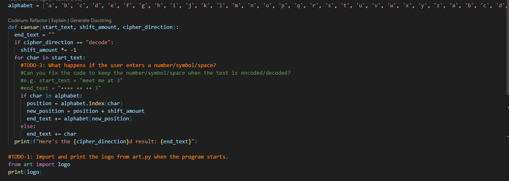
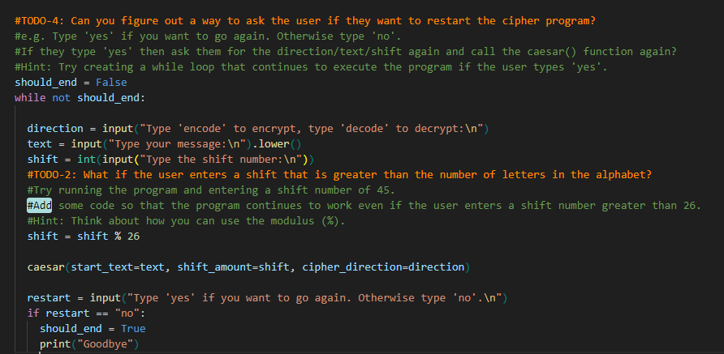
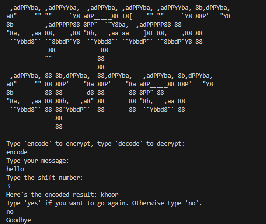
Prime Numbers
A whole number greater than 1 that cannot be exactly divided by any whole number other than itself
and 1 (e.g. 2, 3, 5, 7, 11).Prime numbers are the natural numbers greater than 1 with exactly two factors,
i.e. 1 and the number itself.A prime number is a positive integer having exactly two factors,
i.e. 1 and the number itself. If p is a prime, then its only factors are necessarily 1 and p itself.
Any number that does not follow this is termed a composite number, which can be factored into other positive integers.
Another way of defining it is a positive number or integer, which is not a product of any other two positive integers
except other than 1 and the number itself.
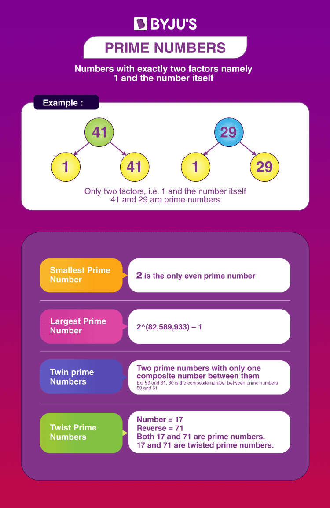
Code :-
#Write your code below this line 👇
def prime_checker(number): # number is a parameter of the function prime_checker()
is_prime = True
for i in range(2, number):
print(f"remeinder by dividing {i} is {number%i}")
print(number%i)
if number % i == 0:
is_prime = False
if is_prime:
print("It's a prime number")
else:
print("It's not a prime number")
#Write your code above this line 👆
#Do NOT change any of the code below👇
n = int(input("Check this number: "))
prime_checker(number=n) #input data/value of n is an arguement of the function prime_checker()
print(f" the user has put {n}")
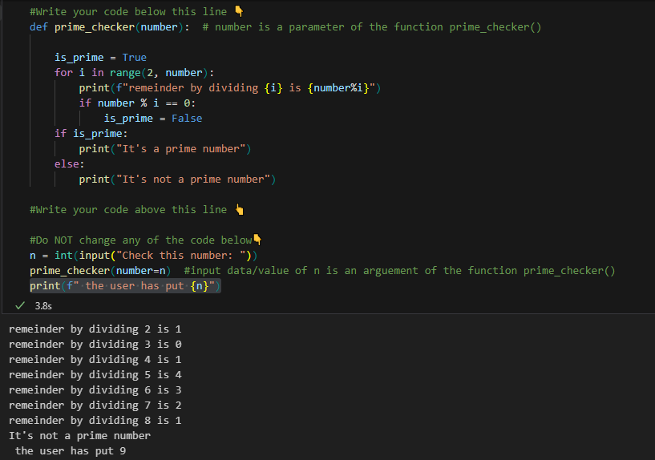
Prime number finding code in another way
number = int(input("Check this number: "))
if number >= 1:
for i in range(2, int(number ** 0.5) + 1):
if number % i == 0:
print("It's not a prime number")
else:
print("It's a prime number")
New Methods applied in the code explained
The index() method in Python is a versatile tool that can be used in various scenarios.
The index() method in Python is used to find the index of the first occurrence of a specified value within a sequence,
such as a list, tuple, or string. Syntax:- variable.index(variable2)
Here, variable is the sequence in which you want to find
the index, and variable2 is the value for which you want to find the index.
Let me provide you with an example using a list:
# Example list
fruits = ['apple', 'banana', 'orange', 'banana', 'grape']
# Find the index of 'orange' in the list
index_of_orange = fruits.index('orange')
index_of_banana = fruits.index('banana')
print(f"The index of 'orange' is: {index_of_orange}")
print(f"The index of 'banana' is: {index_of_banana}")
for fruit_index in fruits:
print(fruits.index(fruit_index),end=' ')
In this example, fruits is a list, and the index() method is
used to find the index of the first occurrence of 'orange' in the list. The result will be the index at
which 'orange' is found, which is 2 in this case
(remember that indexing starts from 0).
Keep in mind that if the specified value is not found in the sequence, the index()
method raises a ValueError. To avoid this, you can use a conditional statement or the
optional parameters of the index() method.
Different Usecases of Index() method :-
Finding the Index of an Element in a List:
fruits = ['apple', 'banana', 'orange', 'banana', 'grape']
index_of_orange = fruits.index('orange')
print(f"The index of 'orange' is: {index_of_orange}")
Handling Duplicate Values:
# Handling Duplicate Values:
fruits = ['apple', 'banana', 'orange', 'banana', 'grape']
first_banana_index = fruits.index('banana')
print(f"The index of the first 'banana' is: {first_banana_index}")
Finding Index in a Sublist:
nested_list = [[1, 2, 3], [4, 5, 6], [7, 8, 9]]
index_of_5 = nested_list.index([4, 5, 6])
print(f"The index of sublist [4, 5, 6] is: {index_of_5}")
Index of Substring in a String:
sentence = "Python is a powerful language"
index_of_powerful = sentence.index("powerful")
print(f"The index of 'powerful' is: {index_of_powerful}")
try:
index_of_watermelon = fruits.index(search_value)
print(f"The index of '{search_value}' is: {index_of_watermelon}")
except ValueError:
print(f"'{search_value}' not found in the list.")
Using Optional Parameters:
# Using Optional Parameters
fruits = ['apple', 'banana', 'orange', 'banana', 'grape']
start_index = 2
index_of_banana = fruits.index('banana', start_index)
print(f"The index of 'banana' starting from index {start_index} is: {index_of_banana}")
These examples showcase different situations where the index() method can be applied, from simple lists to
nested structures and strings. Always consider handling the possibility of the specified value not being
present in the sequence to avoid ValueError.
Day 9 - Dictionaries -
Basic operations in Dictionary by Dr. Liu
Code
adding new items to dictionary
Dictionaries have elements that are identified by their key
Similarities between Lists and Dictionaries:
Iterable
Both lists and dictionaries are iterable, allowing you to loop through their elements.
Dynamic
Both data structures are dynamic, meaning you can add, modify, and remove elements after their creation.
Mixed Data type
Both can store elements of different data types, including numbers, strings, or even other lists or dictionaries.
Accessed by Index/Key
Elements in lists are accessed by index, while elements in dictionaries are accessed by keys.
Differences between Lists and Dictionaries:
Ordered vs. Unordered:
Lists are ordered, meaning elements have a specific order, and you access them by their index.
Dictionaries are unordered, so the order of elements is not guaranteed. Access is based on keys.
Indexing:
Lists use integer indices (0, 1, 2, ...) for accessing elements.
Dictionaries use keys to access elements.Dictionaries use unique keys
(strings, numbers, etc.) for accessing elements.
Duplicate Elements:
Lists allow duplicate elements.
Dictionaries require unique keys; values can be duplicated.
Syntax :
Lists are defined using square brackets: my_list = [1, 2, 3].
Dictionaries are defined using curly braces: my_dict = {'key': 'value'}.
Use Cases:
Lists are suitable for ordered collections where the position of elements matters, like sequences.
Dictionaries are suitable for key-value pairs, providing a mapping between unique keys and values.
Memory Usage:
Lists generally use more memory as they need to store both values and indices.
Dictionaries use memory efficiently for key-value pairs, optimizing access times.
Methods and Operations:
Lists have specific methods for operations like append, pop, and extend.
Dictionaries have methods for operations involving keys, values, and items.
Understanding these distinctions helps in choosing the appropriate data structure based on the specific requirements of your program.
If you need ordered elements and want to access them by position, a list is appropriate. If you need a mapping between keys and values,
a dictionary is more suitable.
Syntax:
adding in dictionary
dict["key"] = "Value"
programming_dictionary =
{
"Bug": "An error in a program that prevents the program from running as expected.",
"Function": "A piece of code that you can easily call over and over again.",
"Loop": "The action of doing something over and over again.",
"Class": "A blueprint for creating objects.",
"Object": "An instance of a class."
}
#adding new items to dictionary
programming_dictionary["Key"] = "Values of the keys in the dictionary"
print(programming_dictionary["Key"])
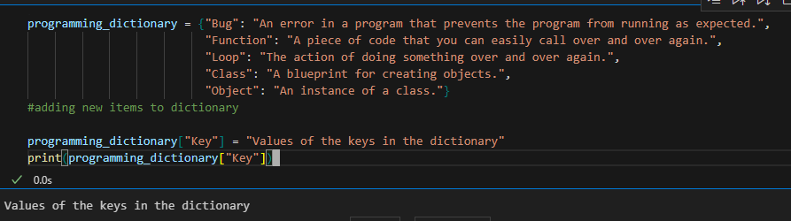
Retrieving items from dictionary
programming_dictionary =
{
"Bug": "An error in a program that prevents the program from running as expected.",
"Function": "A piece of code that you can easily call over and over again.",
"Loop": "The action of doing something over and over again.",
"Class": "A blueprint for creating objects.",
"Object": "An instance of a class."
}
# retrieving items from dictionar
print(programming_dictionary["Function"])
print(programming_dictionary["Class"])
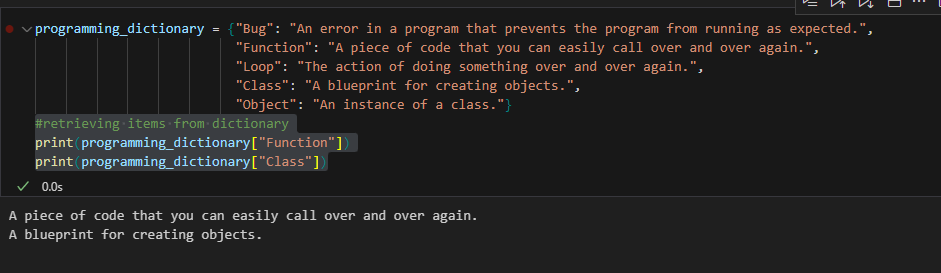
Deleting items from dictionary
#deleting items from dictionary
programming_dictionary =
{
"Bug": "An error in a program that prevents the program from running as expected.",
"Function": "A piece of code that you can easily call over and over again.",
"Loop": "The action of doing something over and over again.",
"Class": "A blueprint for creating objects.",
"Object": "An instance of a class."
}
# Deleting Dictionaries
del programming_dictionary["Arguement"] #deleting an item
print(programming_dictionary)
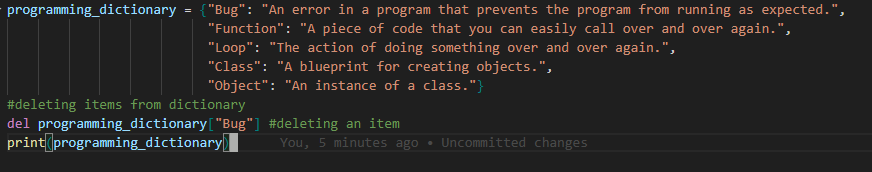
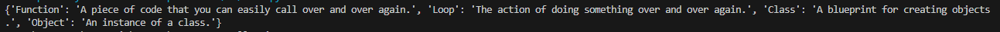
clearing whole dictionary
programming_dictionary =
{
"Bug": "An error in a program that prevents the program from running as expected.",
"Function": "A piece of code that you can easily call over and over again.",
"Loop": "The action of doing something over and over again.",
"Class": "A blueprint for creating objects.",
"Object": "An instance of a class."
}
Copying and emptying in dictionary
programming_dictionary =
{
"Bug": "An error in a program that prevents the program from running as expected.",
"Function": "A piece of code that you can easily call over and over again.",
"Loop": "The action of doing something over and over again.",
"Class": "A blueprint for creating objects.",
"Object": "An instance of a class."
}
Looping of Dictionaries
programming_dictionary =
{
"Bug": "An error in a program that prevents the program from running as expected.",
"Function": "A piece of code that you can easily call over and over again.",
"Loop": "The action of doing something over and over again.",
"Class": "A blueprint for creating objects.",
"Object": "An instance of a class."
}
#looping through dictionary
for key in programming_dictionary:
print(key)
print(programming_dictionary[key])
for value in programming_dictionary.values():
print(value)
for key, value in programming_dictionary.items():
print(f"{key}:{value}")
print(programming_dictionary)
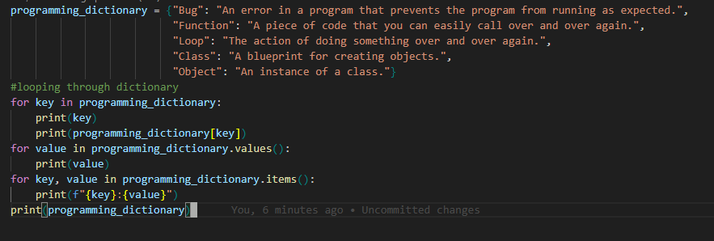
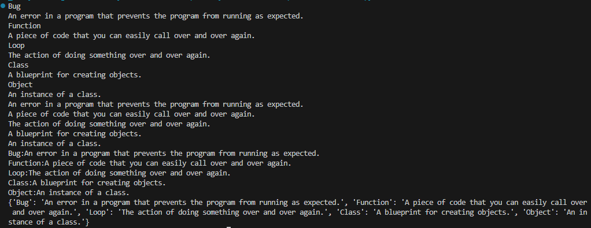
Nesting of Dictionaries
Screenshots of the class has been given here .
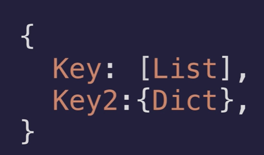
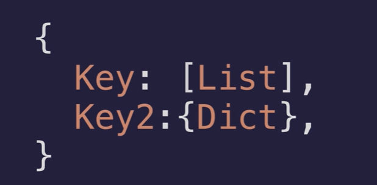
Here below I have explained a simple nested dictionary named as travel_log1. Nesting Dictionary in a Dictionary SYNTAX
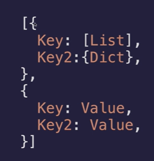
The code
# Nested dictionary structure
travel_log1 = {
"uttar_pradesh": {"cities_visited": ["lakhnau", "ayodhya", "mirat"], "total_visits": 6},
"gujrat": {"cities_visited": ["ahmedabad", "gandhinagar", "surat"], "total_visits": 3},
"karnataka": {"cities_visited": ["bengaluru", "maysuru", "mangaluru"], "total_visits": 4}
}
# Accessing information from the nested dictionary
print(travel_log1["karnataka"]["total_visits"])
print(travel_log1["karnataka"]["cities_visited"])
Explainations of the above code
In the provided code, a nested dictionary structure named travel_log1. This dictionary contains information
about visits to different states in India, and each state has a sub-dictionary with details about cities
visited and total visits.
Nested Dictionary Structure:
The travel_log1 dictionary has three keys: "uttar_pradesh", "gujrat", and "karnataka".
Each of these keys maps to a sub-dictionary containing information about cities visited
and total visits.
Accessing Nested Values:
To access information about Karnataka, you use the key "karnataka" to access the
sub-dictionary.
Then, you can further access specific values within the sub-dictionary using additional
keys.
Output:
print(travel_log1["karnataka"]["total_visits"]) prints the total visits to Karnataka,
which is 4.
print(travel_log1["karnataka"]["cities_visited"]) prints the list of cities visited in
Karnataka.
This nested dictionary structure allows for a more organized representation of hierarchical data, where
states have detailed information about cities visited and total visits. It's a powerful way to model
complex relationships in your data.
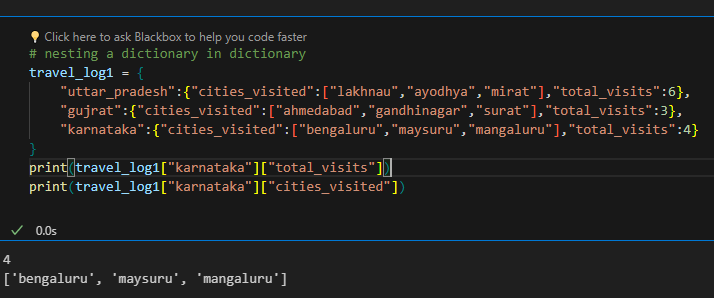
Nesting a list in Dictionary
The Code
#nesting a list in dictionry
travel_log = {
"uttar_pradesh":["lakhnau","ayodhya","mirat"],
"gujrat":["ahmedabad","gandhinagar","surat"],
"karnataka":["bengaluru","maysuru","mangaluru"]
}
print(travel_log["uttar_pradesh"][1])
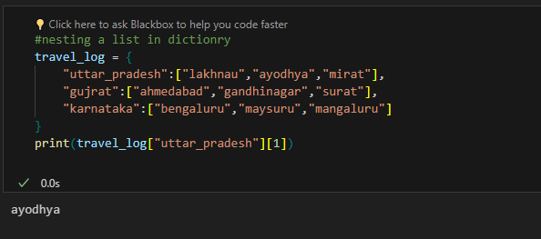
Dictionaries & Stuffs
Definition and Creation:
A dictionary is defined using curly braces {}.
Each element in a dictionary is a key-value pair, separated by a colon :.
The keys in a dictionary must be unique.
Values in a dictionary can be of any data type.
A dictionary can be created using the dict() function.
To create an empty dictionary, use the dict() function with no arguments.
To access a value in a dictionary, use the key as the index.
To add a new key-value pair to a dictionary, use the update() method.
To remove a key-value pair from a dictionary, use the pop() method.
Dictionaries are highly flexible and widely used in Python for their efficiency in data retrieval
and manipulation. They are suitable for scenarios where you need to associate data with unique
identifiers (keys).
#TODO: Write the function that will allow new countries
#to be added to the travel_log. 👇
def add_new_country(country_name,num_visit,cities):
new_country = {}
new_country["country"] = country_name
new_country["visits"] = num_visit
new_country["cities"] = cities
travel_log.append(new_country)
#🚨 Do not change the code below
add_new_country("Russia", 2, ["Moscow", "Saint Petersburg"])
# Assuming travel_log is already defined as mentioned in the previous conversation
def find_visits_in_country(country_name):
for entry in travel_log:
if entry["country"] == country_name:
return entry["visits"]
return f"{country_name} not found in travel_log"
# Example: Find visits to China
visits_to_china = find_visits_in_country("China")
print(visits_to_china)
# Example: Find visits to Russia
visits_to_russia = find_visits_in_country("Russia")
print(visits_to_russia)
# Example: Find cities of China that was visited
def find_cities_visited_in_country(country_name):
for entry in travel_log:
if entry["country"] == country_name:
return entry["cities"]
return f"{country_name} not found in travel_log"
travel_log1 [Auditorium new approach]
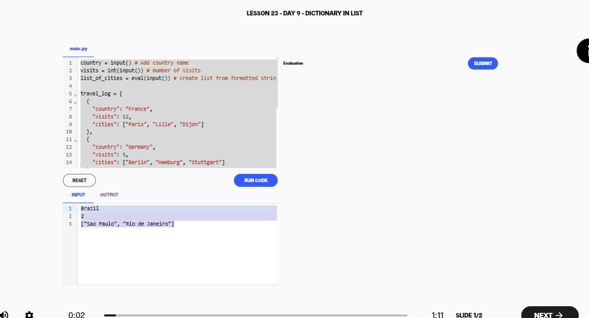 Auditorium Link
country = input() # Add country name
visits = int(input()) # Number of visits
list_of_cities = eval(input()) # create list from formatted string
# TODO: Write the function that will allow new countries
# to be added to the travel_log.
def add_new_country(country_name, num_visits, city_name):
add_new_country = {}
add_new_country["country"] = country_name
add_new_country["visits"] = num_visits
add_new_country["cities"] = city_name
travel_log.append(add_new_country)
# Do not change the code below 👇
add_new_country(country, visits, list_of_cities)
print(f"I've been to {travel_log[2]['country']} {travel_log[2]['visits']} times.")
print(f"My favourite city was {travel_log[2]['cities'][0]}.")
You have access to a database of student_scores in the format of a dictionary.
The keys in student_scores are the names of the students and the values are their exam scores.
Write a program that converts their scores to grades. By the end of your program, you should have a new
dictionary called student_grades that should contain student names for keys and their grades for values.
The final version of the student_grades dictionary will be checked. Objectives
DO NOT modify lines 1-7 to change the existing student_scores dictionary.
Remember that looping through a Dictionary will only give you the keys and not the values.
If in doubt as to why your code is not doing what you expected,
you can always print out the intermediate values.
# Dictionary Comprehension
# Dictionary comprehension is a concise way to create a dictionary in Python.
# Syntax:
# new_dict = {key: value for (key, value) in iterable}
# Example:
# Create a dictionary with numbers as keys and their squares as value
new_dict ={}
for i in range(2,16):
new_dict[i] = i**2
squares = new_dict
for i in squares:
print(f"Number - > {i} : -- Square - > {squares[i]}")
# print(squares)
Silent Auction Project
Introduction
Flowchart
Objectives
The objective is to write a program that will collect the names and bids of different people.
The program should ask for each bidder's name and their bid individually.
Welcome to the secret auction program.
What is your name?: Angela
What's your bid?: $123
Are there any other bidders? Type 'yes' or 'no'.
yes
If there are other bidders, the screen should clear, so you can pass your phone to the next person.
If there are no more bidders, then the program should display the name of the winner and their winning bid.
The winner is Elon with a bid of $55000000000
Use your knowledge of Python dictionaries and loops to solve this challenge.


 while condition:
while condition: 


 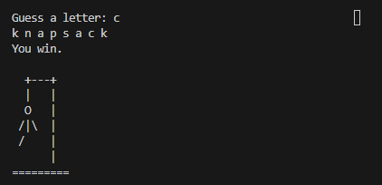
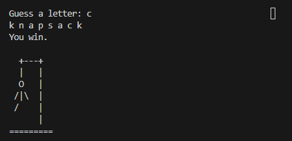


 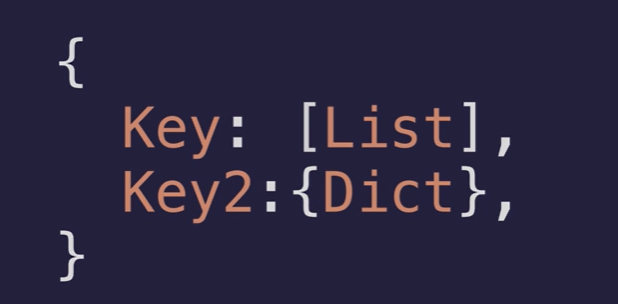
Here below I have explained a simple nested dictionary named as travel_log1.
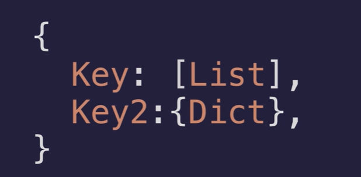
Here below I have explained a simple nested dictionary named as travel_log1.